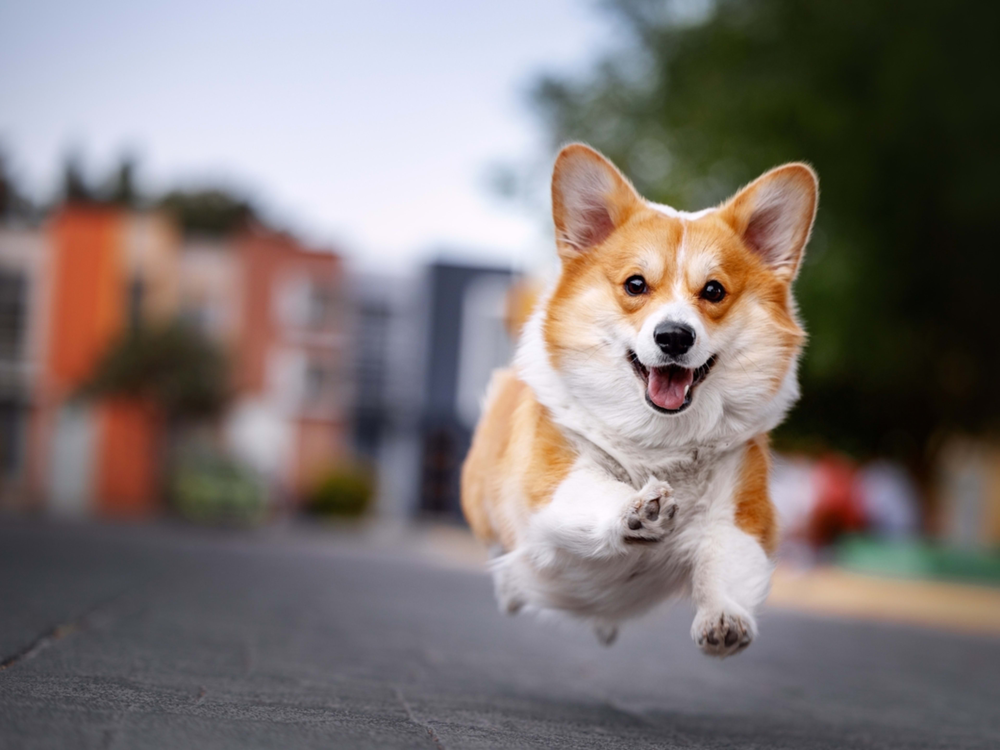

German Shepherd
Location: Rijeka
Name: Rex
Location: Rijeka
Name: Rex
Location: Osijek
Name: Bela
Location: Varaždin
Name: Max
Location: Zadar
Name: Lili
Postani i ti udomitelj i pruži bolji život onima koji te najviše trebaju. Svake godine stotine napuštenih, izgubljenih i neželjenih životinja pronađu svoj novi dom zahvaljujući ljudima velikog srca. Naša misija je da svaka životinja dobije priliku za sreću, toplinu doma i ljubav koju zaslužuje. Budi promjena koju želiš vidjeti.otvori srce i dom onima koji ti uzvraćaju bezuslovnom ljubavlju. Pridruži se zajednici udomitelja i pomozi nam da zajedno gradimo svijet u kojem nijedna šapa ne ostaje zaboravljena.
Postani i ti udomitelj i pruži bolji život onima koji te najviše trebaju. Svake godine stotine napuštenih, izgubljenih i neželjenih životinja pronađu svoj novi dom zahvaljujući ljudima velikog srca. Naša misija je da svaka životinja dobije priliku za sreću, toplinu doma i ljubav koju zaslužuje. Budi promjena koju želiš vidjeti.otvori srce i dom onima koji ti uzvraćaju bezuslovnom ljubavlju. Pridruži se zajednici udomitelja i pomozi nam da zajedno gradimo svijet u kojem nijedna šapa ne ostaje zaboravljena.

"Kad sam prvi put došla u sklonište, nisam planirala uzeti ni psa ni mačku. Samo sam htjela pomoći volontiranjem. A onda sam upoznala Lunicu, tiho stvorenje koje mi se u sekundi uvuklo pod kožu. Dva tjedna kasnije, udomila sam i Maxa, veselog psa s neodoljivim pogledom. Danas ne mogu zamisliti svoj život bez njih dvoje.
Udomljavanje mi je promijenilo život. Ne samo da sam pružila dom njima, već su i oni meni donijeli mir, radost i ljubav koju ne mogu opisati riječima. Ako razmišljaš o udomljavanju napravi taj korak. Ne spašavaš samo njih, spašavaš i sebe."
Postani i ti udomitelj i pruži bolji život onima koji te najviše trebaju. Svake godine stotine napuštenih, izgubljenih i neželjenih životinja pronađu svoj novi dom zahvaljujući ljudima velikog srca. Naša misija je da svaka životinja dobije priliku za sreću, toplinu doma i ljubav koju zaslužuje. Budi promjena koju želiš vidjeti.otvori srce i dom onima koji ti uzvraćaju bezuslovnom ljubavlju. Pridruži se zajednici udomitelja i pomozi nam da zajedno gradimo svijet u kojem nijedna šapa ne ostaje zaboravljena.